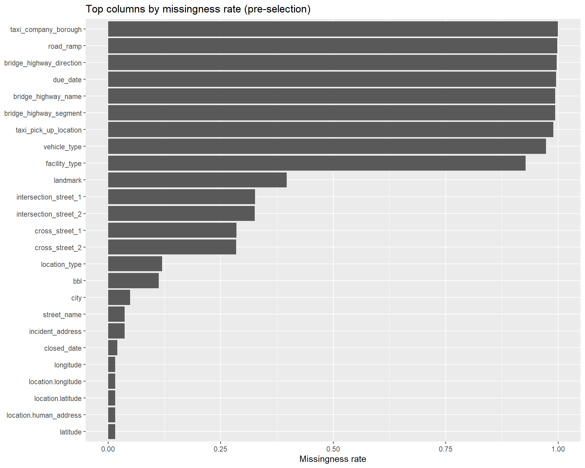
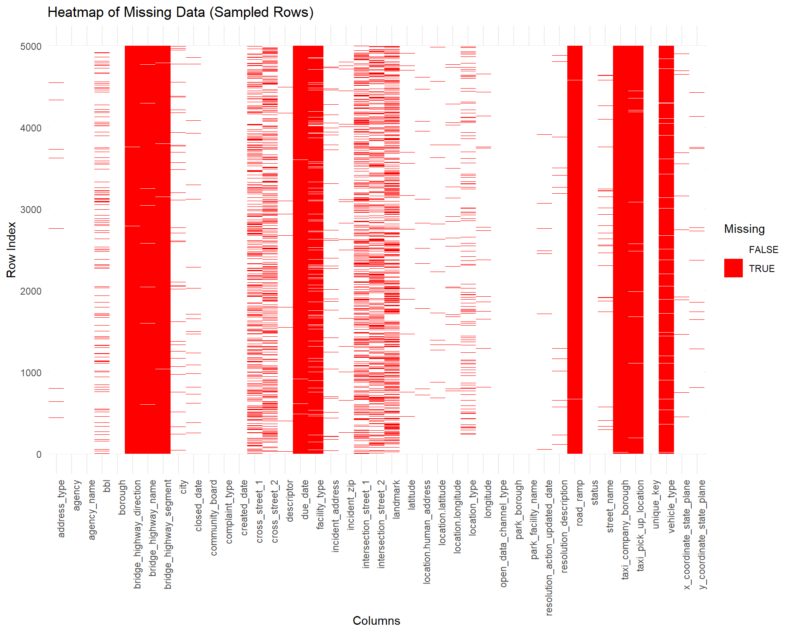

Code
library(dplyr)
library(tidyr)
library(ggplot2)
library(stringr)
library(memoise)library(dplyr)
library(tidyr)
library(ggplot2)
library(stringr)
library(memoise)# library(RSocrata)
# library(dplyr)
# options(timeout = 600)
# base_url <- "https://data.cityofnewyork.us/resource/erm2-nwe9.json"
# get_month_data <- function(year, month) {
# start <- sprintf("%d-%02d-01T00:00:00", year, month)
# # end = first day of next month
# if (month == 12) {
# end <- sprintf("%d-01-01T00:00:00", year + 1)
# } else {
# end <- sprintf("%d-%02d-01T00:00:00", year, month + 1)
# }
# url <- sprintf(
# "%s?$where=created_date >= '%s' AND created_date < '%s'",
# base_url, start, end
# )
# message("Fetching: ", start, " to ", end)
# read.socrata(url)
# }
# # Example: all months of 2023
# months <- 1:12
# list_2023 <- lapply(months, function(m) get_month_data(2023, m))
# data_2023 <- bind_rows(list_2023)
# list_2024 <- lapply(months, function(m) get_month_data(2024, m))
# data_2024 <- bind_rows(list_2024)
# combined <- rbind(data_2023,data_2024)
# saveRDS(combined, "nyc_311_data.rds")combined=combined <- readRDS("nyc_311_data.rds")missing_values_summary <- colSums(is.na(combined))
missing_columns <- missing_values_summary[missing_values_summary > 0]
missing_table <- data.frame(
Column = names(missing_columns),
MissingCount = as.numeric(missing_columns)
)
sorted_table <- missing_table |>
arrange(desc(MissingCount))
print(sorted_table) Column MissingCount
1 taxi_company_borough 6679852
2 road_ramp 6668175
3 bridge_highway_direction 6660223
4 due_date 6651779
5 bridge_highway_name 6639447
6 bridge_highway_segment 6639437
7 taxi_pick_up_location 6611318
8 vehicle_type 6504338
9 facility_type 6199357
10 landmark 2652950
11 intersection_street_1 2180001
12 intersection_street_2 2176719
13 cross_street_1 1903203
14 cross_street_2 1902070
15 location_type 800974
16 bbl 752073
17 city 325436
18 street_name 244008
19 incident_address 243812
20 closed_date 133656
21 latitude 102706
22 longitude 102706
23 location.latitude 102706
24 location.longitude 102706
25 location.human_address 102706
26 x_coordinate_state_plane 102597
27 y_coordinate_state_plane 101804
28 resolution_description 93259
29 descriptor 78842
30 incident_zip 72906
31 resolution_action_updated_date 37625
32 address_type 30391
33 created_date 1miss_by_col_all <- combined |>
summarise(across(everything(), \(x) sum(is.na(x)))) |>
pivot_longer(everything(), names_to = "column", values_to = "missing_n") |>
mutate(total_n = nrow(combined),
missing_rate = missing_n / total_n) |>
dplyr::arrange(desc(missing_n))
top_missing_rate <- miss_by_col_all |>
slice_max(missing_rate, n = 25)
ggplot(top_missing_rate, aes(x = reorder(column, missing_rate), y = missing_rate)) +
geom_col() +
coord_flip() +
labs(
title = "Top columns by missingness rate (pre-selection)",
x = NULL,
y = "Missingness rate"
)
missing_threshold <- 0.60
cols_to_drop_by_missing <- miss_by_col_all |>
filter(missing_rate > missing_threshold) |>
pull(column)The above horizontal bar graph gives a relative view of missing values in all the columns of the dataset. Missing values can, of course, complicate the analysis; however, in our case, the columns with a high number of missing values are not critical to our primary objectives. The data in these columns—such as taxi_company_borough, road_ramp,bridge_highway_direction, bridge_highway_name bridge_highway_segment,taxi_pick_up_location,vehicle_type,facility_type as supporting information rather than core data required for analysis.
For example, columns like bridge_highway_direction only provides metadata about the bridge highway, which is not directly related to analyzing 311 trends . Thus, we can safely drop these columns without significantly impacting our analysis.
set.seed(42)
sampled_data <- combined[sample(1:nrow(combined), 5000), ]
missing_long <- as.data.frame(is.na(sampled_data)) |>
pivot_longer(cols = everything(), names_to = "Column", values_to = "IsMissing")
missing_long <- cbind(RowIndex = rep(1:nrow(sampled_data), times = ncol(sampled_data)), missing_long)
# Plotting heatmap of missing data
ggplot(missing_long, aes(x = Column, y = RowIndex, fill = IsMissing)) +
geom_tile() +
scale_fill_manual(values = c("FALSE" = "white", "TRUE" = "red"), name = "Missing") +
labs(title = "Heatmap of Missing Data (Sampled Rows)",
x = "Columns",
y = "Row Index") +
theme_minimal() +
theme(axis.text.x = element_text(angle = 90, hjust = 1))
The above missing value heatmap shows that missing data is concentrated only in certain columns. The rest of the columns have little to no missing data. This helps us streamline the data cleaning process.
valid_boros <- c("MANHATTAN", "BROOKLYN", "QUEENS", "BRONX", "STATEN ISLAND")
# ---- Diagnostic Plot: Borough counts ----
ggplot(combined, aes(x = borough)) +
geom_bar(fill = "seagreen") +
labs(
title = "Borough Distribution of 311 Complaints",
x = "Borough",
y = "Count"
) +
theme_minimal()
# Drop rows not in valid NYC borough list
df_clean_final <- combined |>
filter(borough %in% valid_boros)Based on our results above we have decided to remove following columns from our data-set as they are either not useful to us or have a lot of missing values.
The columns that we are dropping: taxi_company_borough, road_ramp,bridge_highway_direction, bridge_highway_name, bridge_highway_segment,taxi_pick_up_location,vehicle_type,facility_type, due to high missing values and low relevance to our analysis.
#label
df_clean_final <- combined |>
dplyr::select(
unique_key, created_date, closed_date, resolution_action_updated_date,
agency, agency_name, complaint_type, descriptor, status,
borough, city, incident_zip, incident_address,
latitude, longitude, location_type,
open_data_channel_type,
resolution_description
)
saveRDS(df_clean_final, "df_clean_final.rds")